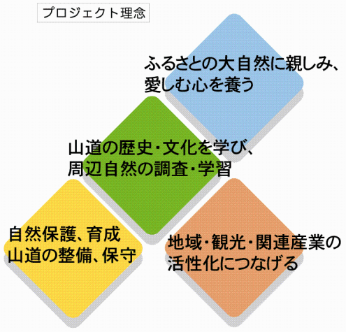

プロジェクトの発信
私たちのふるさとに残る「山道文化」は大切な歴史的貴重遺産であり、永く後世に残すとともに、誰もが自由に楽しめ、共有できる財産でなくてはなりません。
本プロジェクトは、大陸文化が渡来したとも考えられる能登半島から石動山、石動山から白山へと繋がる山道の探求、研究をテーマに発足します。
その活動は、山道の歴史・文化・自然・周辺歴史的遺産の発掘など多岐にわたり、広く募った一般の参加者と共に学び、未来のふるさと創造を目的として私たちのふるさとの財産であるロマンティック「緑の山道」ネットワークの解明に役立ちたいと考えます。

プロジェクトの展開
プロジェクトの活動分野は多岐にわたります。構成は一般の方々と各分野の識者の方々に参加いただきます。
一人ひとりが主体性を持ち、新しいふるさとの創生に汗を流せる環境づくり。
共に学び、共に楽しみ、共に働く。参加意識の高まりと達成感のあるプロジェクトを展開します。
基本プロジェクト活動構想
- 山道整備・自然・野生生物の調査、保護・育成
- 山道観光施設の整備・推進
■コース案内プレート・安全警告表示・インフォーメーションの設置・他 - 山道案内スペシャリスト・観光ボランティアの養成
- 一般参加型定期イベントの企画・開催
■全行程内のポイントでのろし上げ・全行程山道駅伝ラリー（全国公募）・他 - 人的交流・情報交換及び実証成果の発表フォーラムの定期開催
周知活動
- オフィシャル観光パンフレットの発行・ルート案内冊子製作
- オフィシャルホームページの製作・アップロード
- ビデオ・ＤＶＤの作成
観光ルートの提案・開発
- 周辺に点在する温泉地域・食・遊施設など観光資源の再編・活用
（和倉温泉・片山津温泉・粟津温泉・山代温泉・山中温泉・他施設） - 周辺空港を利用する国外・国内の誘客観光パック開発
（小松空港・能登空港・富山空港）